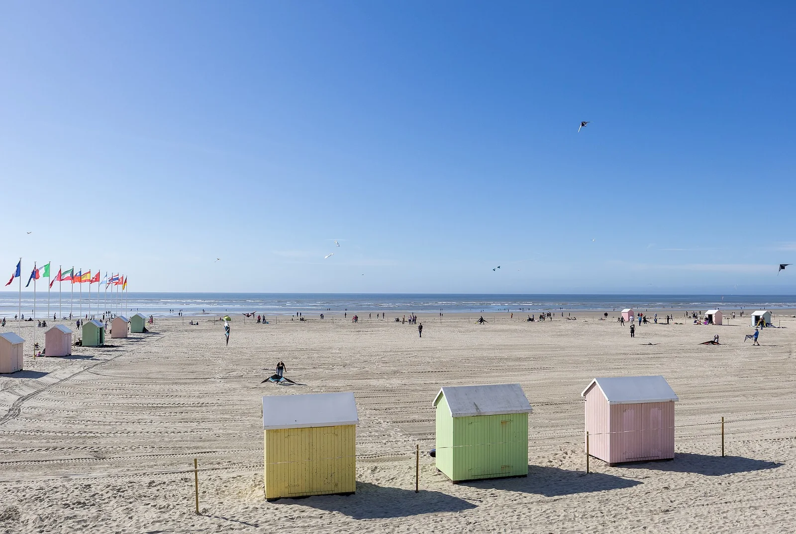

Berck-sur-Mer
Pas-de-Calais, France · kitesurf, windsurf, baignade

Plage immense balayée par le vent, haut lieu du cerf-volant et du kite, avec des phoques en baie d'Authie à proximité.
- Lieu
- Pas-de-Calais, France
- Niveau
- Intermédiaire
- Activités
- kitesurf, windsurf, baignade
- Type d'eau
- Mer / océan
- Coordonnées
- 50.40, 1.56 (position approximative du secteur)
Dangers à connaître
- Estran plat : marée montante très rapide.
- Vent fréquent et soutenu.
Le conseil d'Ocean Buddy
Va observer les phoques de la baie d'Authie (à distance).
Ouvrir dans Ocean Buddy Télécharger sur l'App Store
Source : Description historique Ocean Buddy · vérification externe en attente.